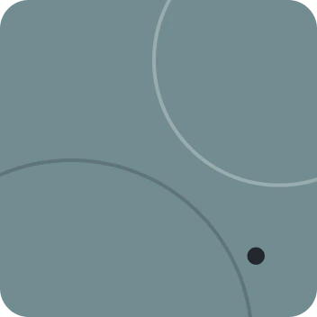
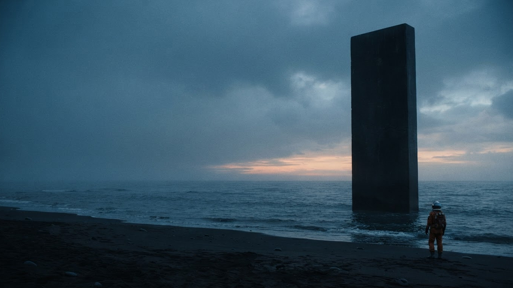
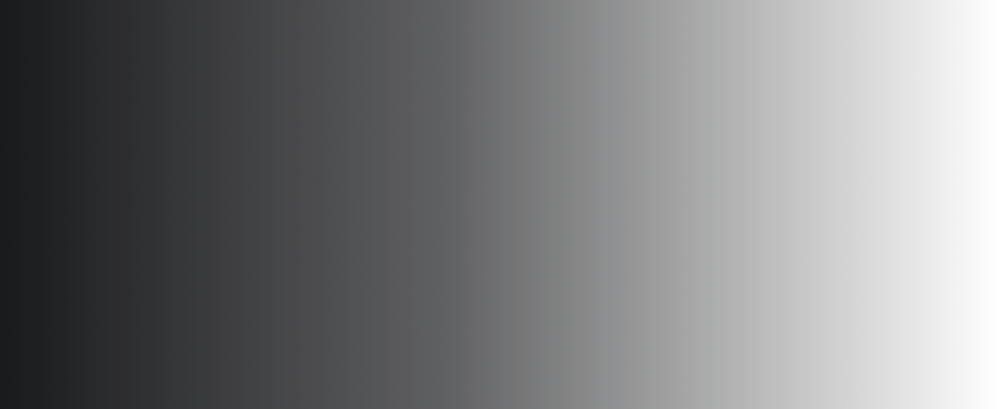
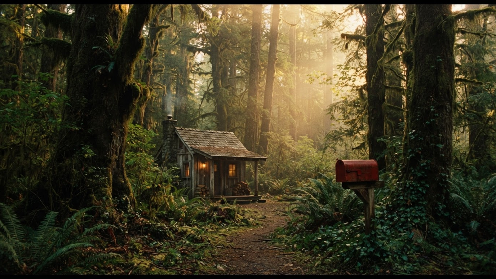
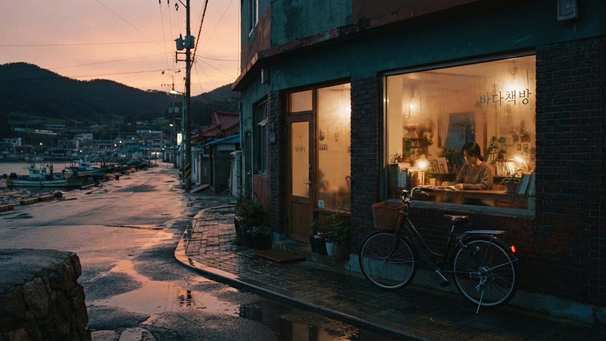
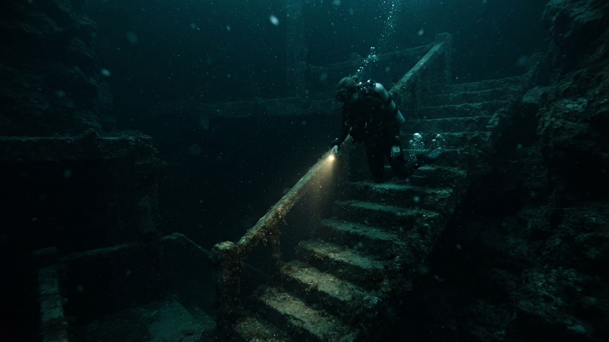

고요의 궤도
SF · 미스터리 · 15+


Y 욜로의 마이페이지

QUIET ORBIT
모든 소리가 사라진 해안, 정체를 알 수 없는 신호가 도착한다. 마지막 관측자는 그 고요 속으로 한 걸음 다가선다.
고요가 시작되는 곳, 이야기가 깨어난다.
A CINEMO ORIGINAL CONCEPT
4편의 이야기
낯선 풍경 속에서 시작되는 네 편의 이야기
SF · 미스터리 · 15+
드라마 · 12+
로맨스 · 드라마 · 12+

판타지 · 드라마 · 전체
4편의 이야기
하루의 끝에 오래 남을, 조용하고 짙은 장면들

드라마 · 전체

스릴러 · 미스터리 · 15+
판타지 · 드라마 · 전체
로맨스 · 드라마 · 12+